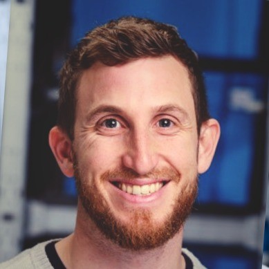
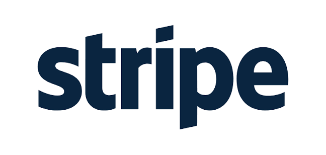
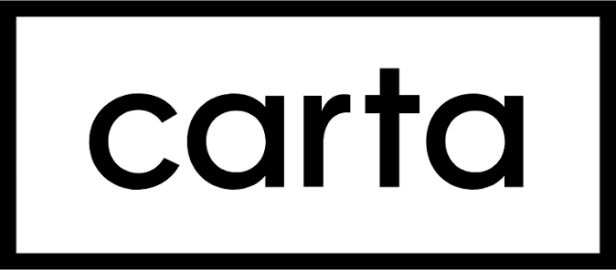
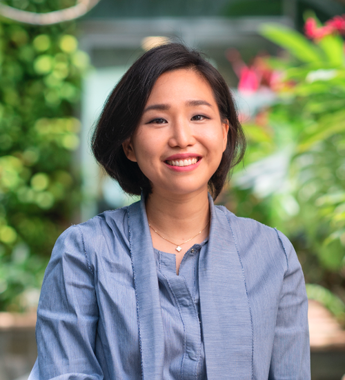
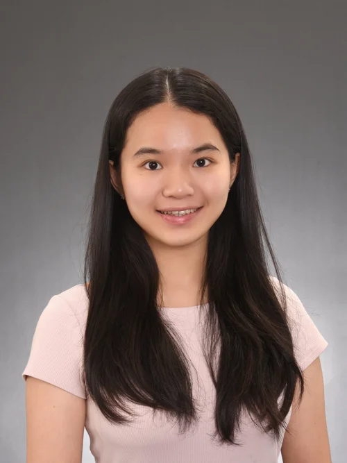
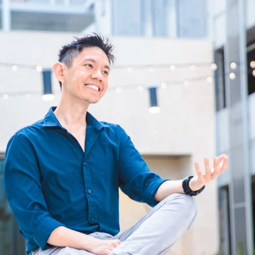

WORKING PAPER
AI-Native Firms
Hyunjin Kim & Rembrand Koning
Read the research ↗ (opens in a new tab)INSEAD AI VENTURE LAB
Helping entrepreneurs build better companies with AI, through INSEAD research, practical programmes and a global community.
 AI Founder Sprint 2025
AI Founder Sprint 2025ENTREPRENEURSHIP, REIMAGINED
We bring founders, researchers, investors and technology partners together to explore how AI changes the way businesses are built.
Through practical programmes and field research, the Lab helps entrepreneurs put AI to work in their ventures — and turns those experiences into evidence that others can use.
OUR FLAGSHIP PROGRAMME
 Joshua Firima · KrosAI · Past Sprint participant
Joshua Firima · KrosAI · Past Sprint participantPut AI to work on the business you are building. Join a global cohort for ten weeks of practical learning, experimentation and expert guidance.
27 January–2 April 2027 · Fully virtual
RESEARCH AT THE CORE
Explore the research informing how founders organise, make decisions and use AI.
WORKING PAPER
Hyunjin Kim & Rembrand Koning
Read the research ↗ (opens in a new tab)WORKING PAPER
Hyunjin Kim, Dahyeon Kim & Rembrand Koning
Read the research ↗ (opens in a new tab)WORKING PAPER
Felipe A. Csaszar, Harsh Ketkar & Hyunjin Kim
Read the research ↗ (opens in a new tab)FROM OUR COMMUNITY
Experiences from the Lab’s founder community.
KrosAI
Demo Day recognition helped strengthen KrosAI’s credibility in investor conversations.

Gadi.ai
A non-technical founder bringing AI into the way the whole company operates.

Mavic.AI
Learning to test assumptions and recognise when a venture needs a different direction.
OUR PARTNERS
Technology, expertise and connections from the Lab’s partner community.





FACULTY & PRACTITIONERS
A community connecting academic insight with entrepreneurial experience.

Founder & Chair · INSEAD

Lab Director · INSEAD

Head of AI Strategy & Instructor

Head of Community Leads · INSEAD

Head of Tech Strategy · HBS
Research Affiliate · SimPPL

Research Affiliate · Wharton

Head of AI Tools & Prototyping

Research Affiliate · HBS
Lead R&D · INSEAD

Lead R&D · INSEAD

Head of Community Strategy
Community Manager · INSEAD

Community Manager · INSEAD
FREQUENTLY ASKED QUESTIONS
Early-stage founders from anywhere in the world can apply. You must be at least 18. You do not need an INSEAD affiliation or an AI product.
Yes. There are no participation fees and the Lab takes no equity.
Plan for around 2–3 hours each week during onboarding and the final weeks, and 4–5 hours each week during the build phase. The Sprint does not require full-time availability.
Applications close on 1 December 2026 at 11:59 pm Singapore time (GMT+8). Selected founders are expected to be notified in early January 2027.
Yes. The Lab welcomes mentors and Community Leads. Use the involvement links below to learn more and apply.
GET INVOLVED
Use AI to build, test and grow your venture.
Apply as a founder ↗ (opens in a new tab)Share your experience with the next cohort.
Apply as a mentor ↗ (opens in a new tab)Connect founders and guide a peer group.
Apply as a Community Lead ↗ (opens in a new tab)